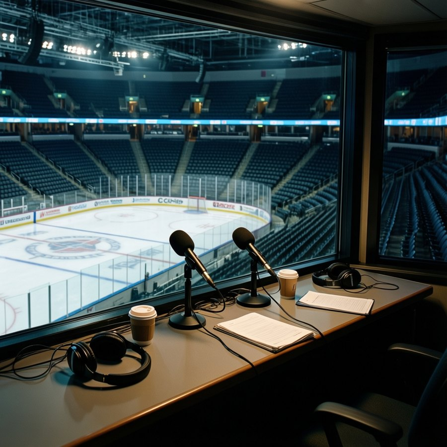

Ep. 2 · Critique: The Mis-Slotted Eight
Gord Tessier and Dana Whitlock on Wednesday, 1 December 2004 to Tuesday, 7 December 2004: 40 pieces from 9 desks.
Download · 8 MB
Show notes
What the hosts read this week. Every figure in the episode traces to one of these.
 The Slot Report
The Slot Report
 Queen City Telegram
Queen City Telegram
- League-best offense meets East-best defense when the Devils visit the Air Canada Centre 7 Dec 2004
- LEAFS 4, NYI 0: Aebischer blanks the Islanders for the 11th straight, and New Jersey visits tonight 7 Dec 2004
- DANFORTH: Gaborik reads 95 on the Index and costs $1.10M, and I have been staring at both numbers since Saturday 7 Dec 2004
- DANFORTH: $6.50M buys 10 starts and a folding chair, and I have made peace with hating it 7 Dec 2004
- Young Guns Watch: 4 Leafs on the Index risers, and I cannot find a reason to be smug about any of them 4 Dec 2004
- THE PANIC METER: code Green for the first time I can remember, and I hate how it feels 4 Dec 2004
- Injury Desk: Belfour returns tomorrow, and Aebischer has no reason to give the crease back 4 Dec 2004
- Goalie Room: Belfour back tomorrow, but Aebischer owns the crease now 4 Dec 2004
- DANFORTH: Brad Richards is the answer, and that is what terrifies me 4 Dec 2004
- DANFORTH: 10 straight wins and the only number I care about is $1.00M 4 Dec 2004
 The Prospect File
The Prospect File
- The Index Went Up at Los Angeles While Everything Else Stayed the Same 7 Dec 2004
- The Toronto Ascension: six under-23s, all rising, all on the same page 4 Dec 2004
- The Pick in the Basement: How Toronto Got Detroit's First Without Lifting a Finger 4 Dec 2004
- I Saw Him When: Petr Chlup and the 18-year-old running Toronto 4 Dec 2004
 The Penalty Box
The Penalty Box
- THE COACH SAT WHOM: Five benches, five better men, zero excuses 7 Dec 2004
- $78 TO WATCH CLIFF RONNING PLAY 8.8 MINUTES: PHILADELPHIA IS THE NEW MOST OVERPAID MESS 7 Dec 2004
- WHAT $80.89 MILLION BUYS YOU: A 40-YEAR-OLD AND A MAN WHO PLAYS NINE MINUTES 4 Dec 2004
- THE MOST OVERPAID TEAM IN HOCKEY (DO THE MATH) 4 Dec 2004
- HOT SEAT METER: FIVE COACHES POLISHING THE RÉSUMÉ 4 Dec 2004
 The Hot Stove
The Hot Stove
- RUMOR METER: Vancouver's Blue Line Just Collapsed. They Have to Buy. 🔥🔥 7 Dec 2004
- RUMOR METER: 12 Deals Signed This Week. 6 Players Injured. Same 4-Day Window. 🔥🔥 7 Dec 2004
- The Rental Market: LA and Chicago Are the Deadline's Supply Side 4 Dec 2004
- Sources: Morale Problems Brewing in Minnesota 4 Dec 2004
- RUMOR METER: Fire Sale Brewing in Atlanta? 🔥🔥 4 Dec 2004
- Contract-Year Watch: 5 Expiring Deals and the Best Record in the League. Only One Club Has Both. 4 Dec 2004
Home Ice Network
- Goalie Watch: Islanders pull DiPietro after a 4-0 loss; Snow starts in Pittsburgh 7 Dec 2004
- Numbers Game: Colorado has 42 points without Sakic or Kariya 4 Dec 2004
- Goalie Watch: Two creases, one question — who starts when the numbers don't lie? 4 Dec 2004
- Goalie Watch: New Jersey benches Brodeur after 20 starts in 22 games 4 Dec 2004
- Goalie Watch: Belfour returns to a crease that kept winning without him 4 Dec 2004
 The Hockey Gazette
The Hockey Gazette
- The Blaine Rankings, Week 3: Peter Forsberg is the Hart frontrunner, and his club is 12-1 on the road 7 Dec 2004
- The Blaine Rankings, Week 2: The gap between the elite and the field is now measured in goals, not points 4 Dec 2004
- The Blaine Rankings, Week 1: Two clubs have left the field, and one of them is tearing through it 4 Dec 2004
- Award Watch: the Vezina is Brodeur's to lose, and the Devils are the third team nobody ranked 4 Dec 2004
 Rinkside
Rinkside
 Plus/Minus
Plus/Minus
- Standings Board: Tuesday, 7 December 2004 7 Dec 2004
The hosts
Gord TessierHost, thirty years of play-by-play
Thirty years of radio play-by-play in the Ontario junior leagues. Thinks in streaks and seasons, loves a comeback, and has seen this movie before.
Dana WhitlockHost, fourteen years on the beat
Fourteen years on the Northeast beat. Reads the Bureau's indices like the weather, keeps a notebook of who said what, and asks what the Wire has confirmed.